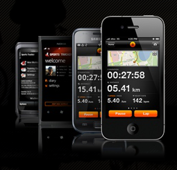
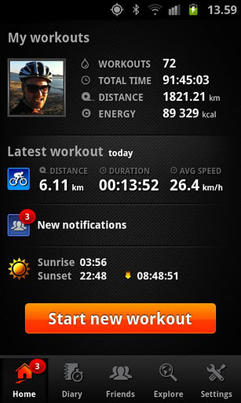
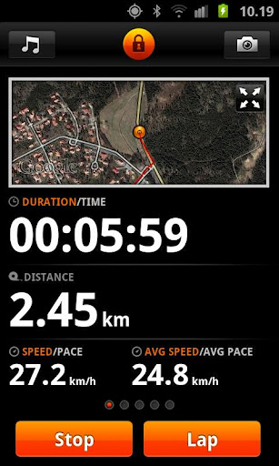
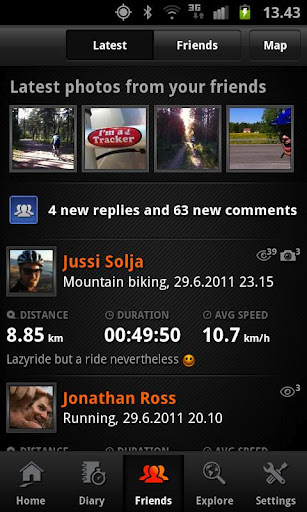
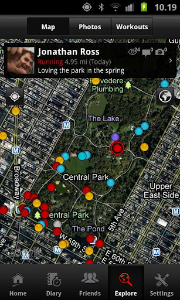
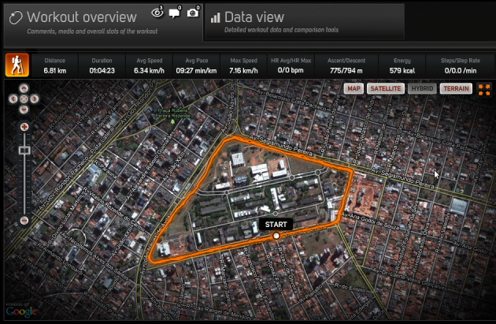

Sports Tracker(){
Dicas

Que tal monitorar suas atividades físicas utilizando o seu celular?
Sports Tracker é um aplicativo que promete auxiliá-lo à ter maior desempenho e mais motivação para continuar se exercitando de forma saudável. Lançado inicialmente para a plataforma Symbian OS, Sistema Operacional para aparelhos Nokia, em 2004, hoje se extende à maioria dos dispositivos móveis modernos, como os das famílias iOS e Android.
Basicamente, todo o programa se resume em trabalhar com as diversas possibilidades de atividades físicas, em união com o GPS, que auxiliará no seu percurso. Você pode monitorar medidas como velocidade, batimentos cardíacos, passadas, distância, energia gasta, entre outras, tudo em tempo decorrido. No final é gerado um relatório de toda a atividade e esta é contabilizada no seu perfil.
O motivo de mostrarmos nesta edição este simples software não é tão somente para dizer que o mesmo pode controlar quaisquer tipos de treinos, mas sim, que ele também pode proporcionar diversão e autoestima para seus usuários. É possível estabelecer conexão via internet para divulgar seus resultados, experiências de trajetos percorridos e manter contato com pessoas que praticam atividades afins. Você tem a opção de criar um perfil, com todas as suas características desportivas e imagens das belas paisagens que você pode ter tirado naquele passeio ecológico, que podem ser divulgados no próprio sítio do aplicativo. Além disso, ele permite que você se ligue ao Facebook e divulgue também o seu dia, o que é muito interessante para quem trabalha na área de educação física.
Perfil do atleta e monitoramento de atividade
Usando o Software:
Na imagem acima você observa a tela inicial do software, ou o perfil do usuário, nele consta o resumo de todos os seus “Workouts”, notificações sobre os seus amigos, menu de opções e o botão de começo de atividades. Ao clicar neste último botão, você poderá selecionar a opção de atividade que se assemelha à que você irá praticar no momento ou escolher “outras” caso ela ainda não exista.
Após a configuração de atividades, você irá se deparar com a tela direita acima, que corresponde as informações correntes sobre sua situação desportiva. Neste momento, o software te possibilitará tirar fotos e ouvir suas músicas já instaladas no aparelho, bastando apenas clicar nos botões do canto superior da tela. Ao arrastar o dedo para direita ou esquerda na tela, você poderá visualizar mais informações como calorias gastas e gráficos. Caso deseje visualizar o mapa, apenas clique nele e o mesmo será maximizado em sua tela. No final da atividade, você poderá inserir alguma descrição e divulgá-la em redes sociais e no próprio sítio do Sports Tracker.
No menu “Diary” você poderá acompanhar detalhadamente cada atividade física, como seu tipo, suas descrições e medições feitas. Quando você divulga suas atividades, é possível também visualizar os comentários dos seus amigos sobre elas. Na sessão “Friends”, você poderá comentar e visualizar as atualizações dos seus amigos e comentar nelas e nas fotos postadas por eles, também é possível localizá-los via GPS e ver suas atividades correntes. Você poderá procurar por novos amigos e adicioná-los também a sua lista de amigos.
O menu “Explore”, permite a você buscar por novos trajetos e atividades desenvolvidas por várias outras pessoas, o que pode motivá-lo a evitar a rotina. Nessa sessão também é possível visualizar fotos destes locais.
O menu de amizades e de busca de atividades
Distribuição do software:
O Software pode ser baixado gratuitamente, você apenas terá que ir até a central de aplicativos da sua plataforma e procurar por ele. O único serviço que não é gratuito, mas opcional, é o de medição de batimentos cardíacos cujo gasto está na aquisição do aparelho que funciona via Bluetooth enviando informações de batidas por segundo.
O sítio do Sports Tracker:
Você poderá acessar o sítio para maiores informações sobre o aplicativo e também para vizualizar o perfil de várias pessoas do mundo inteiro que utilizam este software e quais atividades físicas estão realizando neste momento.
O sítio é: www.sports-tracker.com
No momento da escrita desta matéria, nós da Printf visualizamos o perfil de pessoas no perímetro uberlandense, e aqui bem pertinho da UFU encontramos este esportista:
Usuário se exercitando perto da UFU
Referências:
}